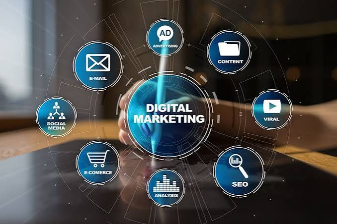
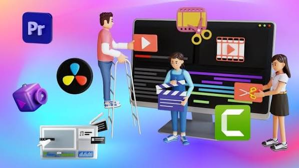

Digital Marketing
Planning and running campaigns, content, and positioning that get a project in front of the right audience.
My skills don't stop at writing and testing code. I also work in digital marketing, virtual assistance, and video editing — the parts of a project that keep it running smoothly, get it in front of the right people, and make it look good doing it.

Planning and running campaigns, content, and positioning that get a project in front of the right audience.
Keeping the operational side of a project on track — scheduling, admin support, research, and day-to-day coordination.

Turning raw footage into polished, publish-ready content, from simple cuts to full edits.